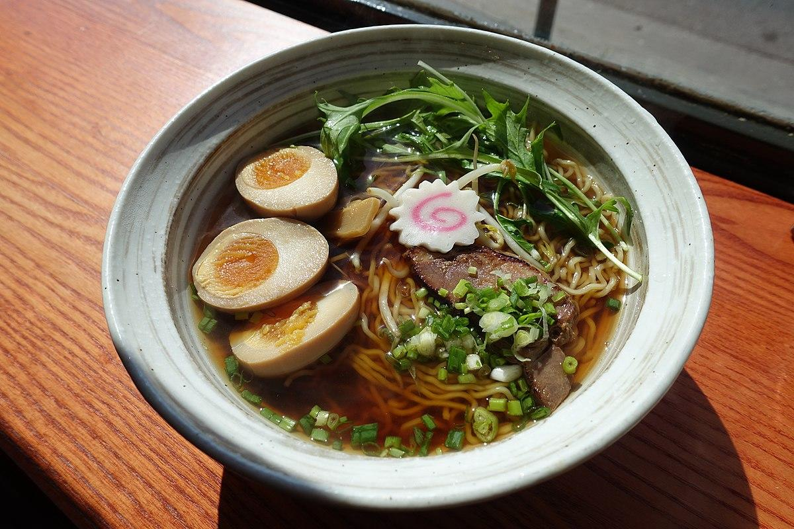
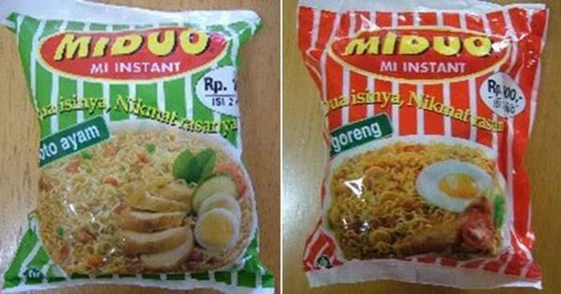
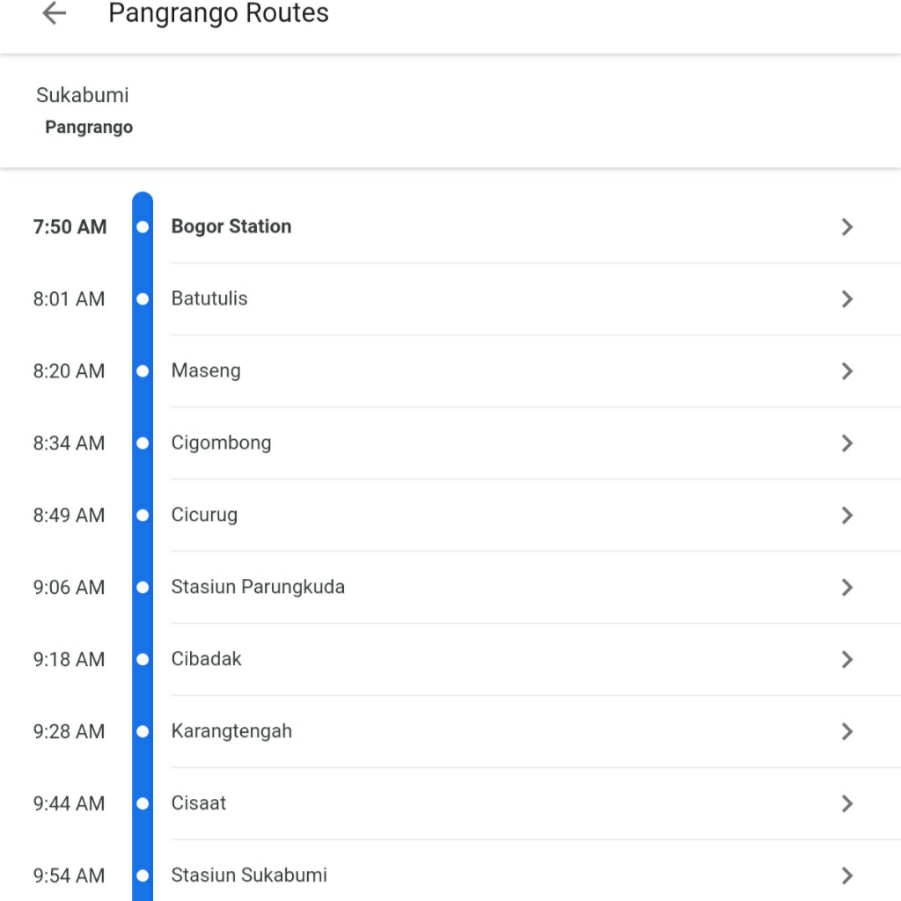

H | ibiscus
Berita
Makanan
Perjalanan
Cari
Home
[NGULINER] 7 Mie Populer di Jepang Ini Jadi Buruan Pecinta Mie (LAPAR GAN!)

Hal-hal Yang Menarik dari Setiap Kemasan Produk, Apa Saja?
Inilah Yang Harus Agan Lakukan Saat Tersesat di Gunung
Ternyata Begini Toh Bentuk Telur Hiu, Gemes Sih...
Produk Yang Dulu Pernah ada dan Kini Tinggal Cerita, Apa saja

Penampakan R-100 Airship Hotel MELAYANG Yang Menakjubkan Dan Berujung Tragis
Cara Aneh Menikmati Mie Instan Versi Sekte Satanis
Terluas di Asia Tenggara, Inilah Fakta Unik Kompleks Percandian Muaro Jambi
Cara membuat makaroni keju enak Top Markotop Maknyus
Cusss Warga Bogor bisa Langsung naik Kereta ke Bandung Euy! Ga Perlu lewat Jakarta
